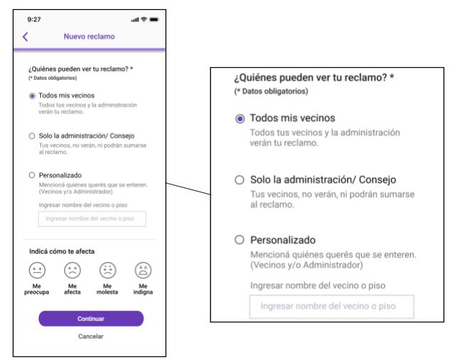
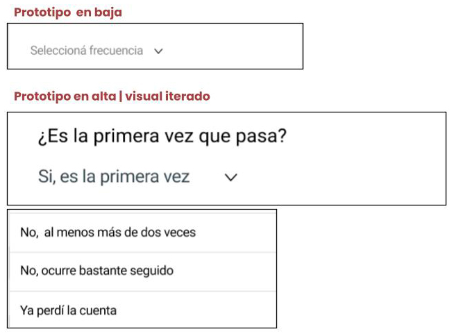
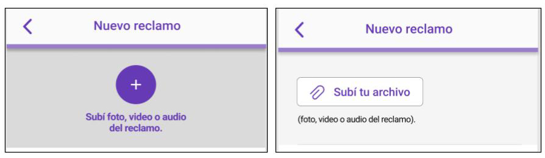
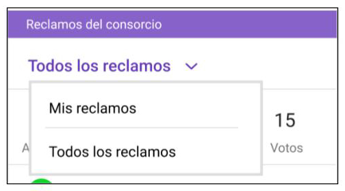

En el segundo testeo, ya en calidad visual, se comprendió que en su simpleza era compleja la pantalla de visibilidad del reclamo. Las opciones de público o privado generaban confusión en su funcionamiento, por lo cual se modificó el contenido diciendo que pueden ver tu reclamo: todos, solo la administración, o personalizadamente mencionando directamente a quien querias que lo reciba. Excluyendo incluso a la administración generando un canal de reclamo de vecino a vecino.

Por otro lado, continuaron los problemas con el wording de frecuencia, tal como nos lo señalaba una usuaria:
“Quizá haría una pregunta específica más APB (a prueba de tontos), “selecciona frecuencia que esto sucede” o “es la primera vez que te pasa?.”

Iteramos la imagen y el botón de adjuntar una foto entendiendo que no era comprensible el call to action para el usuario.

Se mejoró el componente de “mis reclamos y todos los reclamos”, para lograr mayor visibilidad de la interacción.